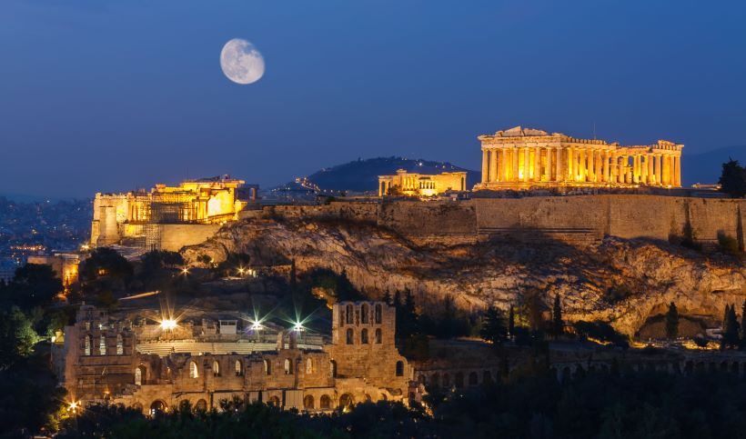

Η Αθήνα είναι η πρωτεύουσα της Ελλάδας από το 1834 και η μεγαλύτερη πόλη της. Βρίσκεται στην Αττική, στην ανατολική Στερεά Ελλάδα, και είναι από τις αρχαιότερες πόλεις του κόσμου, με την καταγεγραμμένη ιστορία της να φθάνει ως το 3.200 π.Χ. Η Αρχαία Αθήνα, αρχικά οικισμός πάνω στην Ακρόπολη, εξελίχθηκε τον 6ο αιώνα π.Χ. σε μία πανίσχυρη πόλη-κράτος, που αναπτύχθηκε παράλληλα με το λιμάνι της, το οποίο αρχικά ήταν το Φάληρο και αργότερα ο Πειραιάς. Υπήρξε, κατά την κλασική εποχή, κέντρο των τεχνών, της γνώσης και της φιλοσοφίας, έδρα της Ακαδημίας του Πλάτωνα και του Λυκείου του Αριστοτέλη.
Αναφέρεται ευρέως ως γενέτειρα της δημοκρατίας. Συχνά, η Αθήνα, όπως και γενικότερα η Ελλάδα,χαρακτηρίζεται «λίκνο του δυτικού πολιτισμού», ενώ άλλες φορές, ο τίτλος αυτός αποδίδεται στην Μεσοποταμία. Η σύγχρονη Αθήνα είναι το κέντρο της οικονομικής, βιομηχανικής, πολιτικής και πολιτιστικής ζωής της Ελλάδας.